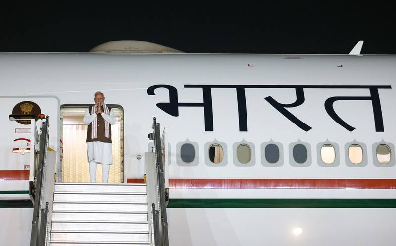

प्रधानमंत्री स्मृति चिन्ह - प्रधानमंत्री को भेंट किए गए उपहारों की ई-नीलामी, 31 अक्टूबर 2026 तक बढ़ाया गया - PIB

प्रधानमंत्री नरेंद्र मोदी — स्मृति चिन्ह ई-नीलामी की तारीख 31 अक्टूबर तक बढ़ाई गई
04 Oct 2026, 03:40 PM
प्रधानमंत्री स्मृति चिन्ह - प्रधानमंत्री को भेंट किए गए उपहारों की ई-नीलामी, 31 अक्टूबर 2026 तक बढ़ाया गया PIB